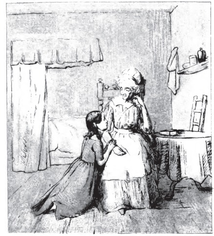
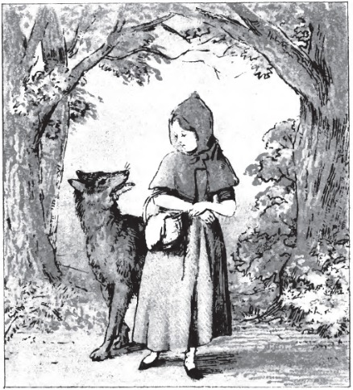
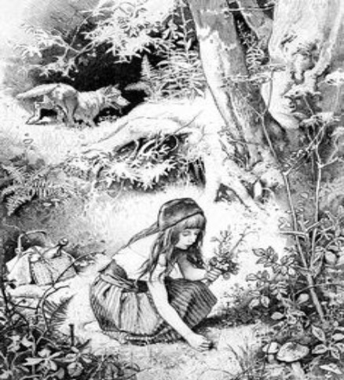
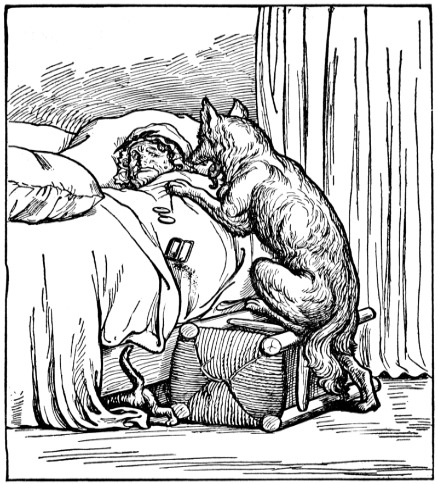
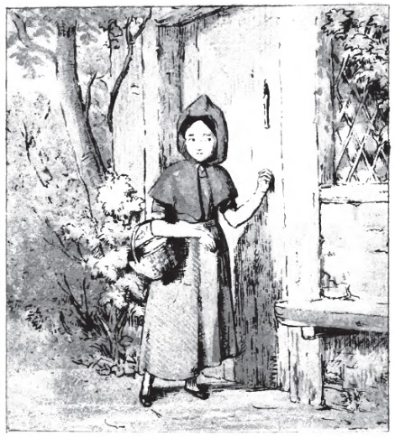
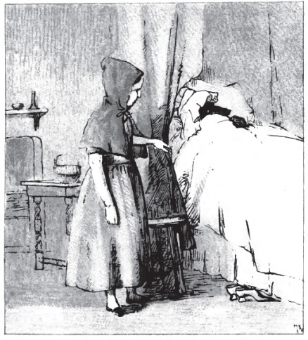

· ·Part 1· ·
Once upon a time, there was a young lass who lived in a village near the forest. Whenever she went out, the girl wore a red riding cloak, so everyone in the village called her Little Red Riding Hood. As she got older, everyone shortened that name to simply Little Red.
One morning, Little Red asked her mother if she could go to visit her grandmother as it had been awhile since they'd seen each other. "That's a good idea," her mother said. So they packed a nice basket for the girl to take to her grandmother.

When the basket was ready, the girl put on her red cloak and kissed her mother goodbye.
"Remember, go straight to Grandma's house," her mother cautioned. "Don't dawdle along
the way and please don't talk to any strangers! The woods are dangerous."
"Don't worry, mother," said Little Red Riding Hood, "I'll be careful."
· ·Part 2· ·
But when Little Red noticed some lovely flowers in the woods, she forgot her promise to her mother. She picked a few, watched the butterflies flit about for awhile, listened to the frogs croaking and then picked a few more. Little Red Riding Hood was enjoying the warm summer day so much, that she didn't notice a dark shadow approaching out of the forest behind her... 
Suddenly, the wolf appeared beside her. "What are you doing out here, lovely lady?" the wolf asked in a voice as friendly as he could muster. "I'm on my way to see my Grandmother who lives through the forest, near the brook," Little Red replied. Then she realized how late she was and quickly excused herself, rushing down the path to her Grandmother's house. The wolf, in the meantime, took a shortcut...
· ·Part 3· ·
The wolf, a little out of breath from running, arrived at Grandma's and knocked lightly at the door. "Oh thank goodness dear! Come in, come in! I was worried sick that something had happened to you in the forest," said Grandmother thinking that the knock was her granddaughter. The wolf let himself in. Poor Granny did not have time to say another word, before the wolf gobbled her up!
· ·Part 4· ·
The wolf let out a satisfied burp, and then poked through Granny's wardrobe to find a nightgown that he liked. He added a frilly sleeping cap, and for good measure, dabbed some of Granny's perfume behind his pointy ears. A few minutes later, Red Riding Hood knocked on the door. The wolf jumped into bed and pulled the covers over his nose. "Who is it?" he called in a cackly voice.
· ·Part 5· ·
"It's me, Little Red Riding Hood."
"Oh how lovely! Do come in, my dear," croaked the wolf.
When Little Red Riding Hood entered the little cottage, she could scarcely recognize her Grandmother. "Grandmother! Your voice sounds so odd. Is something the matter?" she asked. "Oh, I just have touch of a cold," squeaked the wolf adding a cough at the end to prove the point.
· ·Part 6· ·
"But Grandmother! What big ears you have," said Little Red Riding Hood as she edged closer to the bed.
"The better to hear you with, my dear," replied the wolf.
"But Grandmother! What big eyes you have," said Little Red Riding Hood.
"The better to see you with, my dear," replied the wolf.
"But Grandmother! What big teeth you have," said Little Red Riding Hood her voice quivering slightly.
"The better to eat you with, my dear!," roared the wolf and he leapt out of the bed and began to chase
the little girl.
Almost too late, Little Red realized that the person in the bed was not her Grandmother, but a hungry wolf. She ran across the room and through the door, shouting, "Help! Wolf!" as loudly as she could. A woodsman who was chopping logs nearby heard her cry and ran towards the cottage as fast as he could. He grabbed the wolf and made him spit out the poor Grandmother who was a bit frazzled by the whole experience, but still in one piece.
"Oh Grandmother, Are you alright? I was so scared!" sobbed Little Red, "I'll never speak to strangers or dawdle in the forest again." "There, there, child. You've learned an important lesson. Thank goodness you shouted loud enough for this kind woodsman to hear you!" The woodsman knocked out the wolf and carried him deep into the forest where he wouldn't bother people any longer. Little Red and her Grandmother had a nice lunch and a long chat.